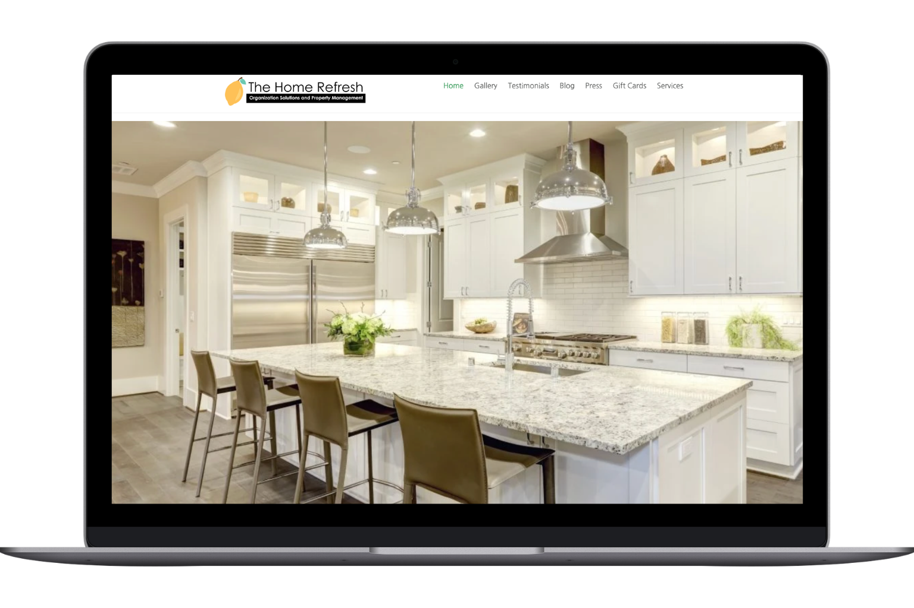
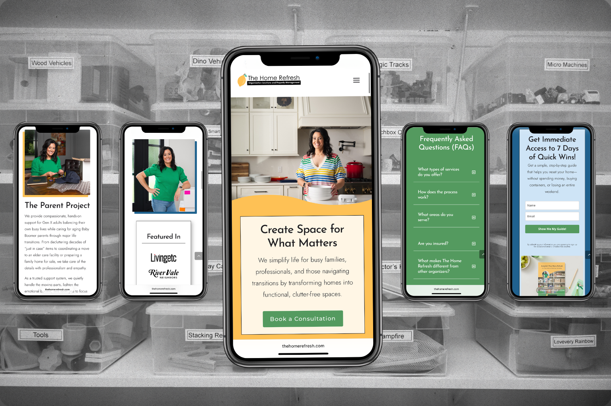

Melissa Simon had built something real. The Home Refresh had become a trusted name in home organizing across River Vale and the surrounding Bergen County area. She helped busy families reclaim their spaces, guided clients through the chaos of relocation, and supported adult children navigating the emotional process of helping aging parents downsize. Her work was thorough, personal, and in demand.
Her website did not reflect any of that.
The old site listed outdated services with descriptions that no longer matched what The Home Refresh actually offered. There was no clear brand identity, no consistent visual language, and no copy that told a prospective client who Melissa served or why her approach was different. Someone landing on the site for the first time had no clear path forward. The work Melissa was doing every day was excellent. The website was not telling that story.
The problem with a generic service website
Home organizing is an inherently personal service. Clients invite you into spaces that can feel private and sometimes overwhelming. Before anyone picks up the phone or fills out a contact form, they need to trust you. That trust starts online, long before any conversation happens.
A website that lists services without context, that has no clear positioning, and that looks like it was built for a generic small business gives visitors nothing to build that trust on. Melissa's old site wasn't just visually dated. It was actively working against the credibility she had spent years building through her work and her reputation.
The right clients were out there. The website wasn't bringing them in.
What Simple Rabbit built
The project was an eight-page custom website, built from the ground up to match the quality and care that defines The Home Refresh as a business.
The homepage was designed to communicate Melissa's positioning from the first screen: who she serves, what she offers, and what makes her approach worth reaching out about. Instead of leading with a list of services, the site leads with the client. Visitors recognize themselves in the language before they've scrolled a pixel.
Each service area got its own space and its own voice, written to speak directly to the specific person dealing with that situation. A busy family managing a cluttered home is thinking about completely different things than an adult child trying to help a parent transition out of a longtime house. The site addresses each of them clearly, without making anyone wade through information that isn't relevant to them.
The about page brought Melissa forward as both a professional and a person. In a service category where the human relationship matters as much as the outcome, letting clients see who they'd be working with is not optional. It's often the thing that converts a hesitant visitor into a real inquiry.

BeforeThe homepage, before and after
The design reflected what anyone who has worked with Melissa already knows: organized, warm, and polished without being cold. Clean typography, intentional white space, and a visual system that communicates care and attention to detail before a single word is read. The site looks like the service it's selling.

thehomerefresh.com on mobile
Every page was also built with SEO and local search in mind. For a service business operating in a specific geographic area, showing up when Bergen County clients search for home organizing services is not a nice-to-have. It's a material part of how new clients find you.
Click either to view the full website
What happened after launch
Melissa is now booked solid.
Since the new site launched, The Home Refresh has received dozens of consultation requests directly through the website. Traffic increases month over month. The site has become a core part of Melissa's local marketing. When a potential client gets a referral from a friend or meets Melissa at a networking event, the website confirms everything they were told. It reinforces the reputation rather than undermining it.
That last point matters more than it might seem. A referral is warm, but it is not automatic. The person who was referred still checks the website before reaching out. If what they find doesn't match what they were told, they hesitate. When the site matches the reputation and then some, the referral converts. The website is doing active sales work around the clock, not just sitting there as a formality.
"Working with Leann from Simple Rabbit was an absolute dream. She completely brought my vision to life. Her designs were modern, clean, and totally on point. She made the entire process feel so easy and seamless. I truly felt like I was in the best hands from start to finish."
"My business has taken off exponentially."
Melissa Simon, The Home Refresh
What this kind of result actually requires
Melissa's results are not unusual for a service business that commits to a website built with intention. What changes is not the quality of the service being delivered. Melissa was already excellent at her work before the new site existed. What changes is the gap between the quality of the service and the quality of the impression it makes online. When those two things match, the right clients find you, they reach out, and they arrive already trusting you.
A website that was built for who you were three years ago, or for no one in particular, cannot do that work. A site built around your specific positioning, your specific clients, and the specific outcome you help them achieve can. The difference shows up fast.
For more on how website design shapes what clients expect before they contact you, read our article on why clients push back on your rates and how the right website fixes it. Or take a look at the full Simple Rabbit portfolio to see how this approach translates across different service industries.
Your website should be doing this kind of work for your business
If your current site isn't bringing in the right clients consistently, the structure is the problem. Get a quote and we'll take an honest look at what your site is communicating and what it would take to change it.